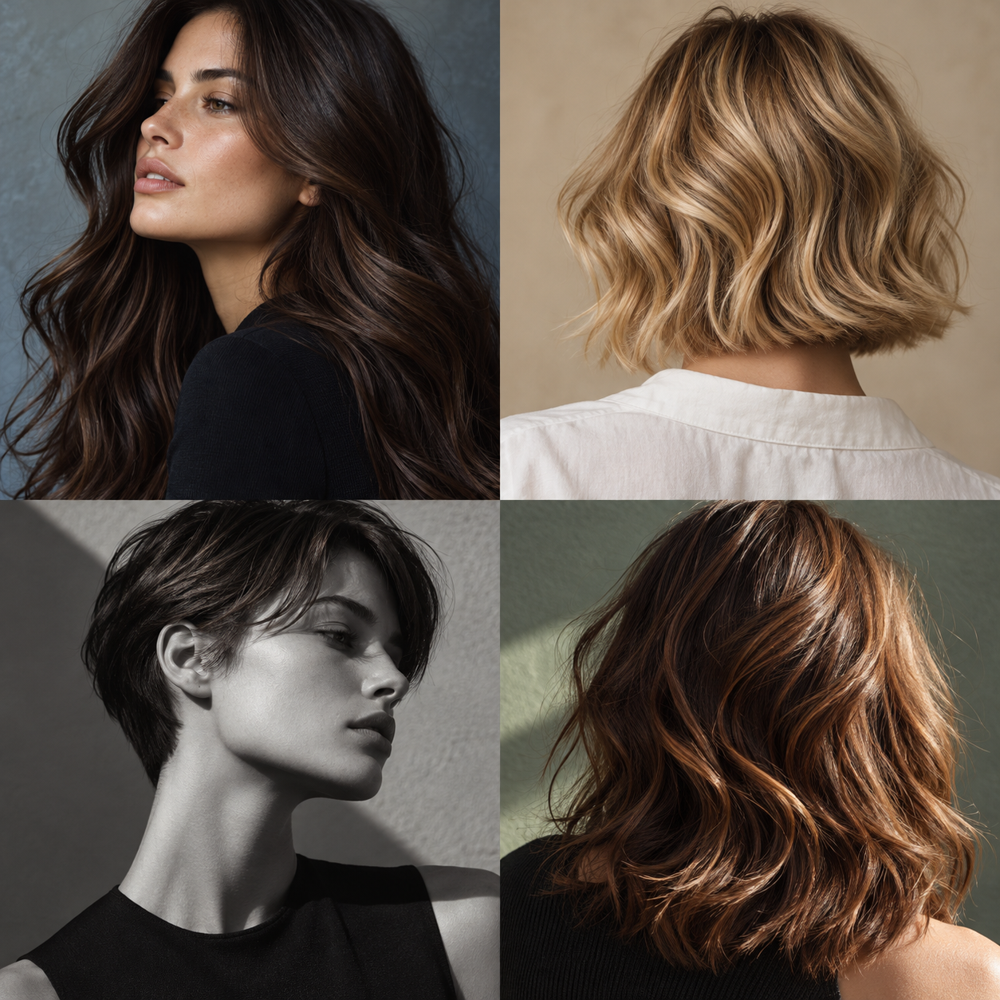

Zeig dich
Ein anderer Schnitt verändert die Silhouette. Ein Farbton verändert das Licht. Was spricht dich an?
Ein Gefühl für deinen Look
Vier Bildideen. Wähle, was dich anspricht.
Form
Wie möchtest du dich sehen?
Klare Linien, weiche Bewegung oder ein neuer Farbton: Sammle eine erste Idee für das Gespräch im Salon.
Dein nächster Look beginnt bei dir.
Gestaltungsstudie für Coiffeur Merveilleux. Alle Bildmotive sind KI-generiert und zeigen weder das reale Team noch Arbeiten des Salons. Texte sind Entwurfsvorschläge; Leistungen und Kontaktdaten sind noch abzugleichen.